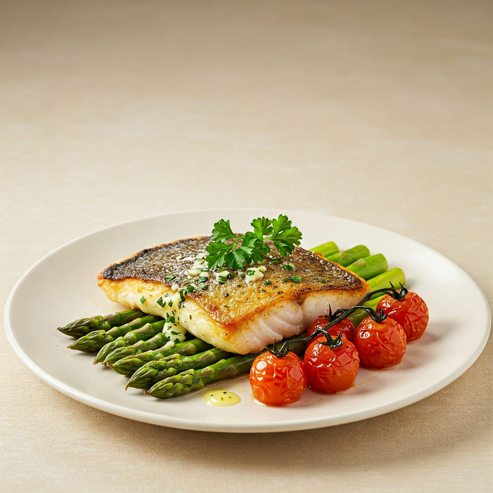

פילה סלמון נורבגי טרי, אפוי בעדינות עם שום, שמן זית ועשבי תיבול
₪98פילה דניס פריך מבחוץ ונימוח מבפנים, עם נגיעות של לימון ורוזמרין
₪92תבשיל דג ים סוחף ברוטב עגבניות פיקנטי, שום ופלפלים
₪90דג לברק שלם, צלוי בתנור עם ירקות שורש, שמן זית וטימין
₪105קציצות עסיסיות מדג טרי ברוטב לימון, כוסברה ושום
₪88